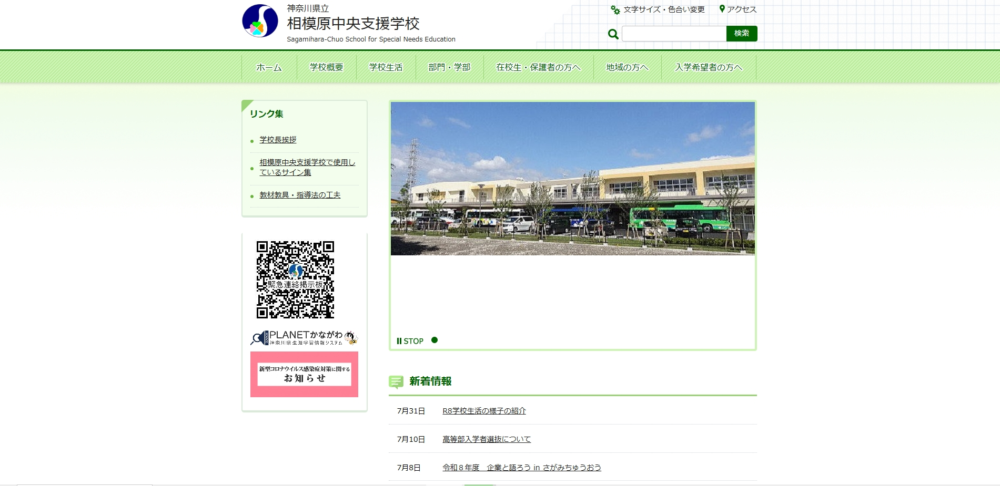

ホーム | 学校概要 | 学校生活 | 部門・学部 | 保護者の方へ | 地域の方へ | 入学希望の方へ
|
◇ リンク集 ◇ ☆ 関連リンク ☆ ・緊急連絡用掲示板 ・PLANETかながわ ・コロナウイルス対応(トップへ) 0001 人目のご訪問者です☆ (来場者カウンター より) ☆ 掲示板に書き込み☆ お返事かならずします(^_^)/ |
神奈川県立
|
| ★ 新着情報 ★ |
|
7月31日 R8学校生活の様子の紹介 7月10日 高等部入学者選抜について 7月8日 令和８年度 企業と語ろう in さがみちゅうおう 7月6日 不祥事ゼロプログラム 7月1日 パン販売のお知らせ |
| ★ お知らせ ★ |
|
・R8学校生活の様子の紹介 ・高等部入学者選抜について ・パン販売のお知らせ ・令和8年度同窓会のお知らせ ・令和8年度 夏の公開研修会のお知らせ |
◇ 学校の写真 ◇
 |
 |
| ↑学校外観(クリックで拡大予定) | ↑学校紹介ビデオ(近日公開・工事中) |
▲ ページの先頭へ戻る | 掲示板 | サイトマップ | アクセス | 個人情報の取り扱い
This page is best viewed with

神奈川県立相模原中央支援学校 All Rights Reserved.
Copyright (C) 1996-1999 ここのすい
このホームページは無断リンク歓迎！相互リンク大募集！！
| △ | △ | △ | △ | △ |